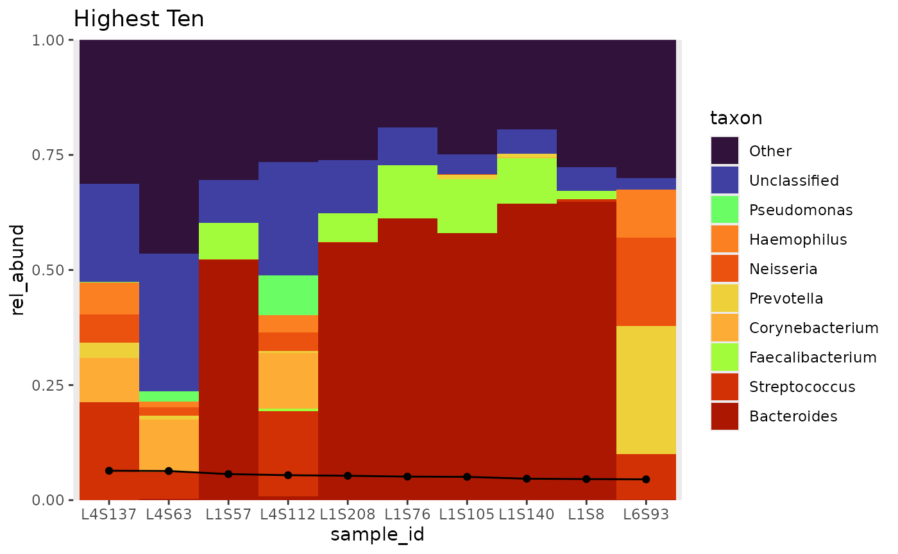
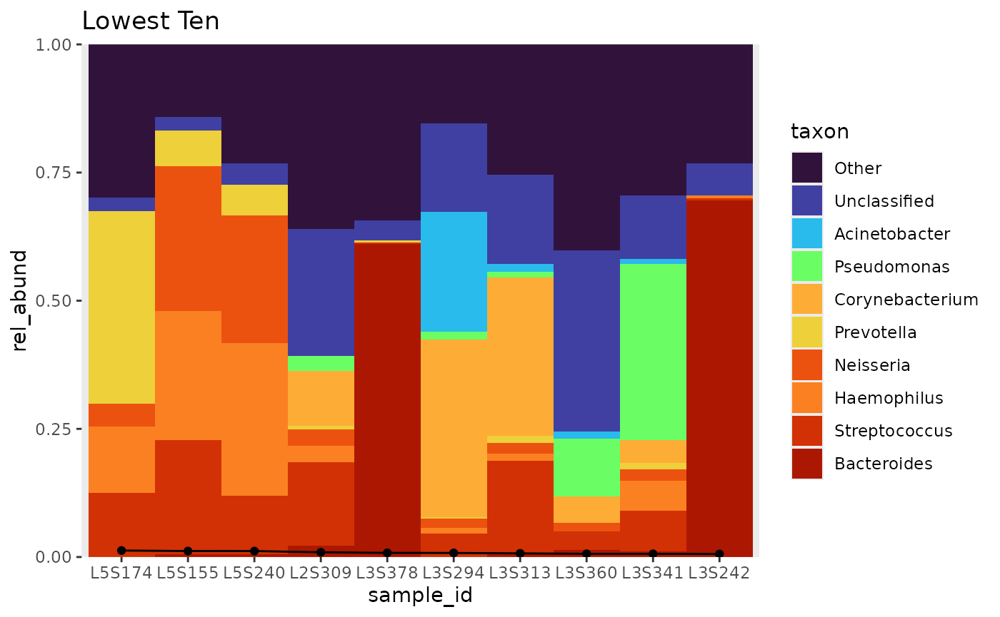
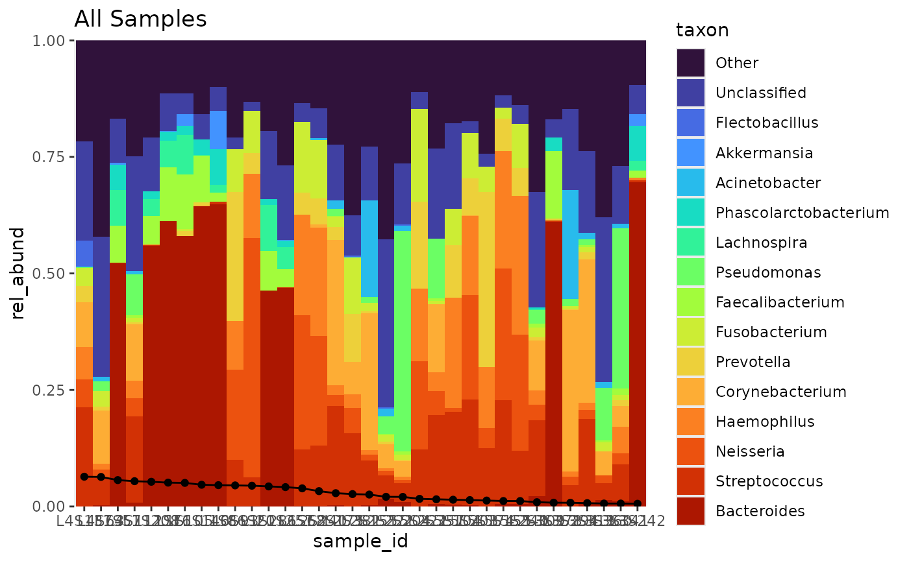

4. Global colour scheme
global_colour_scheme.RmdSetting a global colour scheme for several plots
Sometimes you will want to subset samples from your relative
abundance table to make separate, focused plots. In this case, it would
be nice to set a global colour scheme so that taxon colours remain
consistent between plots. To do this, we have to pre-generate a ordered
set of all taxa, using bubbler::all_taxa, then we generate
our individual relative abundance tables, which are used to select the
taxon colours we need for all the plots.
When generating unique_taxa from the full relative
abundance table, I have to add an “Other” observation, which accounts
for it being added when pooling. I subset the samples by their relative
abundance into three groups: “high”, “low”, and “middle”, to be used for
three separate plots. The taxa are then pooled and arranged.
extract_unique_taxa will extract the taxon present in all
inputted relative abundance tables. The global colour scheme is
generated by finding the intersection of taxa within all relative
abundance tables.
counts <- system.file("extdata", "qiime", "table-dada2.qza", package = "bubbler")
taxa <- system.file("extdata", "qiime", "taxonomy.qza", package = "bubbler")
metadata <- system.file("extdata", "qiime", "sample-metadata.tsv", package = "bubbler")
# prearrange rel_abund samples by their abundance and pool
tb <- rel_abund_qiime(counts, taxa, metadata, taxa_level = "Genus") %>%
arrange_var_abund(flip = TRUE) %>%
pool_taxa(n_taxa = 16, label = FALSE)
# Ordered tibble of taxa, by abundance
unique_taxa <- tb %>%
add_other() %>%
all_taxa()
#> Warning: There was 1 warning in `dplyr::mutate()`.
#> ℹ In argument: `taxon = forcats::fct_reorder(taxon, mean)`.
#> Caused by warning:
#> ! `fct_reorder()` removing 35 missing values.
#> ℹ Use `.na_rm = TRUE` to silence this message.
#> ℹ Use `.na_rm = FALSE` to preserve NAs.
# the highest ten samples
# since we already pooled once, we have to do n + 1, because "Other" already exists
tb_h <- tb %>%
subset_high_low(subset = "high", n = 10) %>%
pool_taxa(n_taxa = 11, label = FALSE) %>%
arrange_taxa()
# lowest ten samples
tb_l <- tb %>%
subset_high_low(subset = "low", n = 10) %>%
pool_taxa(n_taxa = 11, label = FALSE) %>%
arrange_taxa()
# the middle set of samples
tb_m <- tb %>%
subset_high_low(subset = "low", n = 10, flip = TRUE) %>%
subset_high_low(subset = "high", n = 10, flip = TRUE) %>%
pool_taxa(n_taxa = 11, label = FALSE) %>%
arrange_taxa()
subset_unique_taxa <- extract_unique_taxa(tb, tb_h, tb_l, tb_m)
colourscheme <- global_colour_scheme(unique_taxa, subset_unique_taxa)
tb_h %>%
bar_plot(position = "fill",
true_line = TRUE,
global_colours = colourscheme) +
ggtitle("Highest Ten")
tb_l %>%
bar_plot(position = "fill",
true_line = TRUE,
global_colours = colourscheme) +
ggtitle("Lowest Ten")
tb_m %>%
bar_plot(position = "fill",
true_line = TRUE,
global_colours = colourscheme) +
ggtitle("Middle Set")
tb %>%
arrange_taxa() %>%
bar_plot(position = "fill",
global_colours = colourscheme,
true_line = TRUE) +
ggtitle("All Samples")